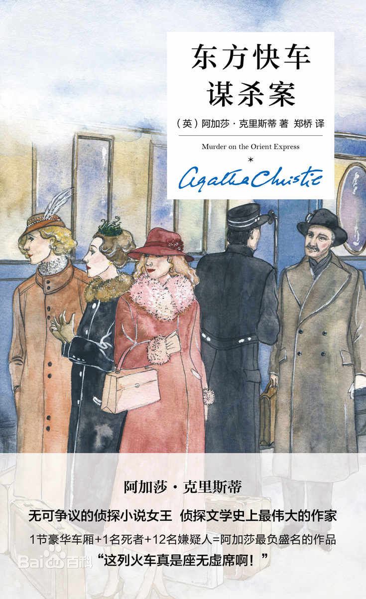
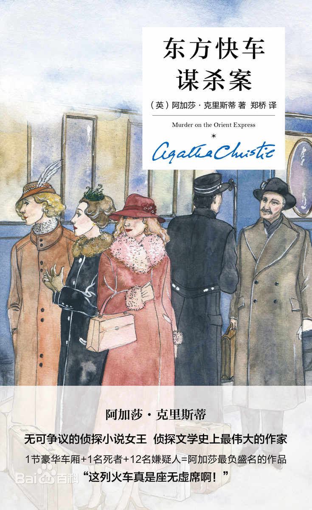

关于此网站
本网站致力于为每一个爱书人士推出能激励个人成长的好书！只有当一本书提供了精神成长、工作技能的提升，才会被我们所推荐！读书的益处:
1. 读书可以增加谈吐深度2.读书可以保持大脑的活跃
3.读书可以使人抵抗孤独
4.读书可以释放压力
5.读书使人明智
小组信息
学院：经贸学院班级：17电子商务B2班
小组：“高尔基”小组
《东方快车谋杀案》
《东方快车谋杀案》（Murder on the Orient Express）是英国作家阿加莎·克里斯蒂创作的侦探小说，属于赫尔克里·波洛系列之一，由英国柯林斯犯罪俱乐部于1934年1月1日首次出版。
1932年的林白绑架案触动了阿加莎的创作灵感。然而，更重要的是触动了她关于正义、关于尊严、关于复仇正当性的多重联想。小说《东方快车谋杀案》中，犯罪嫌疑人卡塞蒂被抓获，很快进入案件审理阶段。然而在作者笔下，整个事件出现了另一种表达：首先，案件之外再添几条人命。黛西已有身孕的母亲悲伤过度去世，阿姆斯特朗本人无法接受种种残酷，在绝望中弃世。家中的一个女佣，也因无辜受到怀疑而自杀。其次，残忍的真凶卡塞蒂最终未被定罪，因为金钱搞定了一切。第三，便是出现在东方快车上的离奇命案。十二名旅客正好是英美法庭陪审团的人数，他们代替法律行事，朝卡塞蒂身上一人捅了一刀，作为造成阿姆斯特朗家庭毁灭性悲剧的凶手的惩处。这样的复仇让这个模式化故事引出系列可以让人不停探究的主题：私刑是否可以作为法律缺位的替代手段，仪式化的私刑是否提升了私刑的正义性，而集体行凶是否减轻了个体的邪恶感。
小说通篇以第三人称叙事，看似完全是叙述者采用全知全能的视角在故事外进行的隐身式叙述。但在叙事的初始阶段，叙述者便跳出文本之外，表明了他是在整个事件发生后对其进行的总结叙述。“往后他将想起这一景象。”就这一句话就可以证明叙述者倒叙性的叙事性质。阿加莎实际上是采取将叙述者的视角位移至小说中人物视角的办法，掩盖了叙述者全知全能的聚焦空间。通篇来看，叙述者的聚集范围基本在波洛的判断范围之内。实际上达到的效果是通过将波洛作为一种叙述者的方法拉近了叙述接受者同他的距离，尽管故事是由第三人称来叙述的，事件却是透过波洛的眼光去看的，并通过他的脑子思考和聚焦。叙述者运用权力自限来完成了叙事聚焦的转变。小说虽然通篇运用第三人称叙事，实质上，其在小说叙事过程中所起的作用等同于第一人称的叙事，只有这样，为叙述接受者提供有限的资料才成为可能。阿加莎之所以没有直接选择采用第一人称叙事的方式，是为后面跳角的使用留有余地。在静坐思考的部分，叙述者为我们分别展示了波洛、布克先生和康斯坦丁医生的意识流思考过程，只有叙述者使用仅管是假性的全知视角，才能实现人物间限知视角的随意转化。
小说中的波洛有着远超常人的近乎愚昧的固执，他始终保持自己的处事原则。小说中他反复强调：案情一旦有他插手，绝不半途而废，直至查出事情的真相为止。因为事情的真相几乎是他的最高信仰。在他的思想中法律和真相近乎于他本身，但随着案情逐步抽丝剥茧，真正的真相呈现在他的眼前——小说中唯一的死者，其实是个恶名昭彰的职业绑匪。而这个绑匪却在犯案后改名换姓，靠着到手的巨额赎金舒舒服服过日子，直到被复仇者杀死。真相大白以后，本应代表法理的波洛却没有做出符合法律预期的裁决，反而轻描淡写的几句话，从容放过了凶手。本应将对恶棍复仇的凶手们送进警察局的大侦探，将强烈正义感化作了浓浓柔情。可他心中的冲突却显而易见，将其潜藏在心中的人性揭露无疑，但又对自己的失职无法介怀。作为法律的代言人，波洛在做出最终决定的那一瞬间，内心的挣扎可想而知。
1932年的林白绑架案触动了阿加莎的创作灵感。然而，更重要的是触动了她关于正义、关于尊严、关于复仇正当性的多重联想。小说《东方快车谋杀案》中，犯罪嫌疑人卡塞蒂被抓获，很快进入案件审理阶段。然而在作者笔下，整个事件出现了另一种表达：首先，案件之外再添几条人命。黛西已有身孕的母亲悲伤过度去世，阿姆斯特朗本人无法接受种种残酷，在绝望中弃世。家中的一个女佣，也因无辜受到怀疑而自杀。其次，残忍的真凶卡塞蒂最终未被定罪，因为金钱搞定了一切。第三，便是出现在东方快车上的离奇命案。十二名旅客正好是英美法庭陪审团的人数，他们代替法律行事，朝卡塞蒂身上一人捅了一刀，作为造成阿姆斯特朗家庭毁灭性悲剧的凶手的惩处。这样的复仇让这个模式化故事引出系列可以让人不停探究的主题：私刑是否可以作为法律缺位的替代手段，仪式化的私刑是否提升了私刑的正义性，而集体行凶是否减轻了个体的邪恶感。
小说通篇以第三人称叙事，看似完全是叙述者采用全知全能的视角在故事外进行的隐身式叙述。但在叙事的初始阶段，叙述者便跳出文本之外，表明了他是在整个事件发生后对其进行的总结叙述。“往后他将想起这一景象。”就这一句话就可以证明叙述者倒叙性的叙事性质。阿加莎实际上是采取将叙述者的视角位移至小说中人物视角的办法，掩盖了叙述者全知全能的聚焦空间。通篇来看，叙述者的聚集范围基本在波洛的判断范围之内。实际上达到的效果是通过将波洛作为一种叙述者的方法拉近了叙述接受者同他的距离，尽管故事是由第三人称来叙述的，事件却是透过波洛的眼光去看的，并通过他的脑子思考和聚焦。叙述者运用权力自限来完成了叙事聚焦的转变。小说虽然通篇运用第三人称叙事，实质上，其在小说叙事过程中所起的作用等同于第一人称的叙事，只有这样，为叙述接受者提供有限的资料才成为可能。阿加莎之所以没有直接选择采用第一人称叙事的方式，是为后面跳角的使用留有余地。在静坐思考的部分，叙述者为我们分别展示了波洛、布克先生和康斯坦丁医生的意识流思考过程，只有叙述者使用仅管是假性的全知视角，才能实现人物间限知视角的随意转化。
小说中的波洛有着远超常人的近乎愚昧的固执，他始终保持自己的处事原则。小说中他反复强调：案情一旦有他插手，绝不半途而废，直至查出事情的真相为止。因为事情的真相几乎是他的最高信仰。在他的思想中法律和真相近乎于他本身，但随着案情逐步抽丝剥茧，真正的真相呈现在他的眼前——小说中唯一的死者，其实是个恶名昭彰的职业绑匪。而这个绑匪却在犯案后改名换姓，靠着到手的巨额赎金舒舒服服过日子，直到被复仇者杀死。真相大白以后，本应代表法理的波洛却没有做出符合法律预期的裁决，反而轻描淡写的几句话，从容放过了凶手。本应将对恶棍复仇的凶手们送进警察局的大侦探，将强烈正义感化作了浓浓柔情。可他心中的冲突却显而易见，将其潜藏在心中的人性揭露无疑，但又对自己的失职无法介怀。作为法律的代言人，波洛在做出最终决定的那一瞬间，内心的挣扎可想而知。
关于书籍的格言
为乐趣而读书。 —— 毛姆 读书之法，在循序而渐进，熟读而精思。 —— 朱熹
读书使人心明眼亮。 —— 伏尔泰